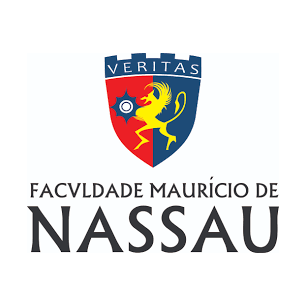

Seja bem vindo!
Esta é uma página de autoria própria pensada para ser um portfólio sobre mim. A ideia deste site surgiu através de uma atividade prática da escola que faço parte: A Trybe!
Atualmente é lá que eu estudo Desenvolvimento Web, escola que traz uma experiência imersiva com foco no mundo do trabalho.
Todavia, já venho de uma jornada muito longa tanto acadêmica quanto profissional.
Ficou curioso? Então saca só um pouco da minha história acadêmica:
-
Técnico em Eletrônica na Escola Técnica Redentorista
Foi o primeiro curso que ingressei após encerrar o ensino médio, iniciando em janeiro de 2011 e concluindo em julho de 2012
-
Superior Tecnólogo em Análise e Desenvolvimento de Sistemas na Faculdade Maurício de Nassau
Minha paixão por desenvolvimento já existia antes, mas foi aqui que ela aumentou: Iniciei o curso em Janeiro de 2013 e concluí em Dezembro de 2015
-
Graduação em Engenharia Elétrica na Universidade Federal de Campina Grande

Sentindo saudades da eletrônica trabalhada no meu primeiro curso, busquei Engenharia Elétrica para suprir minhas duas paixões. Todavia, aos poucos fui vendo que não era o que eu queria para mim e, no meio desse processo, surgiu a Trybe!
- Técnico em Informática na empresa Faculdade Maurício de Nassau - Um ano e meio;
- Operador de Telemarketing na Orbitall SA - Dois anos e sete meses;
- Monitor de Operações na Aec Relacionamento e Responsabilidade - De 02/10/2019 até os dias atuais;
- RPG de mesa;
- Acampar na natureza;
- Fazer Trilhas (também no meio do "nada");
- Swordplay (E como eu sei que muita gente não conhece o esporte, já vou deixar o link pra você clicar e SABER MAIS IMEDIATAMENTE! );
- Futebol.
Um pouco da minha história profissional:
Nem tudo se resume a trabalho e estudos
Apesar de estudar o que você gosta ser uma coisa maravilhosa (e trabalhar ainda mais), existem outras informações que me definem, como meus Hobbys, que querendo ou não também me moldaram a ser quem eu sou hoje. Sendo assim, lá vai meu TOP 5:
Isso é tudo, pessoal! "Até logo e obrigado pelos peixes!"
É isto, galera! Este foi um resuminho do resuminho do resuminho de alguns pontos e acontecimentos importantes da minha vida, mas seria impossível definir vinte e oito anos em uma página html/css. Ainda há muito o que viver, aprender e melhorar e por isto estou na Trybe!